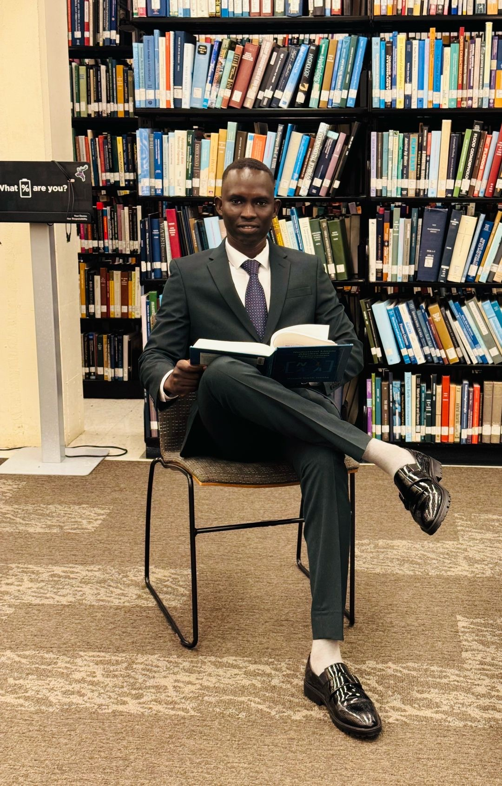

Economics • Data Science • Entrepreneurship
Economics student at Vanderbilt University exploring the intersection of markets, data, technology, entrepreneurship, and economic development.

I am pursuing a B.S. in Economics with a minor in Data Science at Vanderbilt University. My interests span economics, quantitative analysis, entrepreneurship, technology, and economic development. I enjoy using analytical thinking to understand real-world problems and building initiatives that create practical opportunities for others.
Founded and grew a men's clothing wholesale business, developing experience in sourcing, pricing, customer acquisition, financial management, and entrepreneurship.
Co-founded a college-access initiative supporting talented low-income South Sudanese students through mentorship, academic preparation, and university application guidance.
Conducted quantitative research using health, economic, and demographic data from Sub-Saharan Africa to study socioeconomic factors associated with regional differences in life expectancy.
Coordinated event logistics, staff scheduling, room preparation, and operational execution for university clients and events.
I'm always interested in opportunities to learn, collaborate, and work on meaningful economic and technology-related problems.
contact@johnakok.com